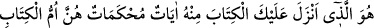
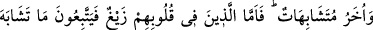
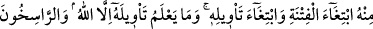
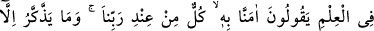
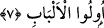

sâdık mürîdin kalp rahmine müridlik nutfesi düşürür. Mürid burada şeyhin velâyet
tasarruflarına teslim olur. Çünkü şeyhin velâyet tasarrufları, rahimlerin meliki
mesabesinde olmakla mürîdin zâhir ve bâtın hallerini düzenler. Bu devrede, öfkeli
hallerin zuhûr etmemesi, garib ve uygunsuz bir koku duymaması için halveti ve uzleti
seçer. Bunlar, nutfenin düşmemesi ve bozulmaması için şarttır. Mürid, şeyhin emir ve
idâresi altında oturur kalkar.
Allah Teâlâ, müridden beklenen hallerin tahakkuk etmesi durumunda onu kendi
te’yîdine mazhar şeyh vâsıtasıyla her kırk günlük halvet süresinde, bir halden başka bir
hâle, bir makamdan başka bir makama geçirir. Bu haller ve makamlar kuds ve üns
bahçelerine varıncaya kadar devam eder. Kırk günlük devrelerle üns âlemine çıkar.
Yine bu kırkgünler sâyesinde ilk yaratılışında olduğu gibi kalp rahminde ceninin
yaratılışı tamamlanmış olur. Artık böyle bir kul, yeryüzünde Allah’ın halîfesi kılınır;
velînin evlâdlarına mahsûs olan ruhun üfürülmesi hakkına sahip olur. Bu ruh Ruhu’l-
Kuds’dür ki onun kula verilmesini Cenâb-ı Hak bizzat üzerine almıştır. Bunu ifade için
de “O, kullarından dilediklerine emrinden olan ruhu ilkâ eder.” (Mü’min 40/15) ve
“Allah onların kalplerine îmanı yazmış, kendinden bir ruh ile de onları te’yîd
etmiştir.” (el-Mücadele, 58/22) buyurulmuştur. İşte bu büyük fâide ve muazzam nîmet
için ruhlar kurbiyyet (yakınlık) makamı olan a’lâ-yı ılliyyînden bu’diyyet (uzaklık) olan
esfel-i sâfilîne indirilmiştir. Nitekim Cenâb-ı Hak bunu ifade için: “Hepiniz birden
oradan ininiz. Size benden bir yol gösterici gelir de kim benim gösterdiğim yoldan
giderse, artık onlara hiçbir korku yoktur. Onlar mahzûn da olacak değillerdir.” (el-
Bakara, 2/38) buyurmuştur.
Kalıba ruh verildiği zaman beden “Adem” olur ve bütün melekler onun hilâfetini
kabul ederler. Bunu öğren, inşaallah işin aslını anlarsın. Bunlar, Şeyh Necmüddin
Kübrâ hazretlerinin et-Te’vîlât’ından alınmıştır. Cenâb-ı Hak, bizi kendini tanımanın
sırları, hakikatleri ve incelikleri ile feyizlendirsin, âmîn.
7. Sana Kitab’ı indiren O’dur. O’nun (Kur’ân’ın) bazı âyetleri muhkemdir ki,
bunlar Kitab’ın esasıdır. Diğerleri de müteşâbihtir. Kalplerinde eğrilik olanlar, fitne
çıkarmak ve onu te’vil etmek için müteşâbih âyetlerin peşine düşerler. Halbuki
O’nun te’vîlini ancak Allah bilir. İlimde yüksek pâyeye erişenler ise: Ona inandık;